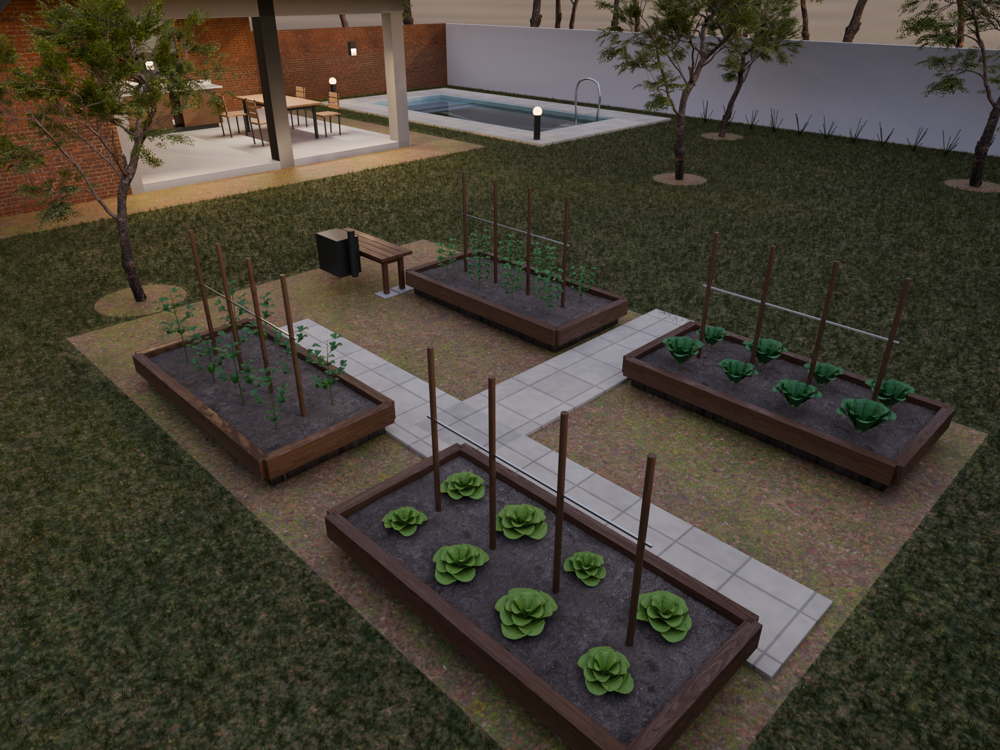
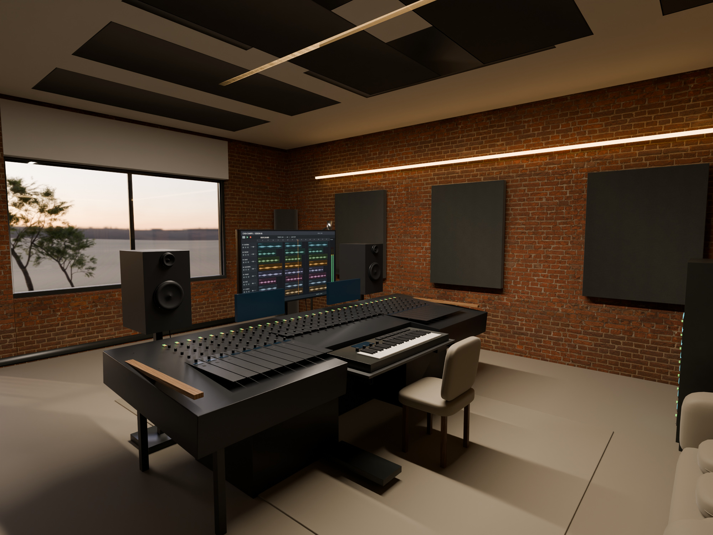
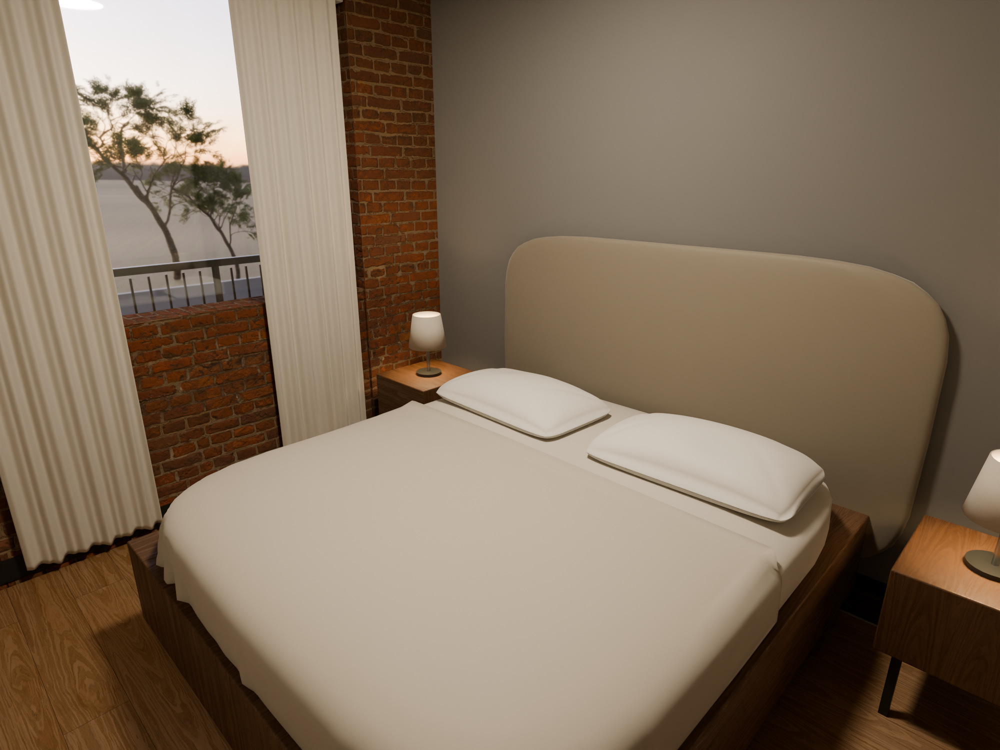
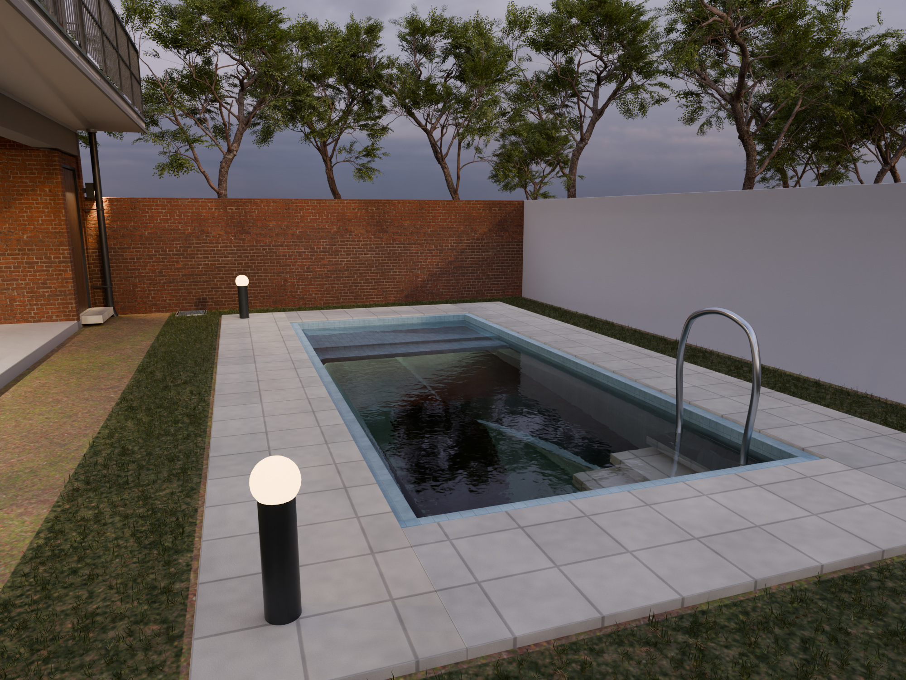

Virrey del Pino · Cedro Misionero
R8 / versión publicadaLa propiedad completa, en R8.
Herrajes sanitarios corregidos, apoyos para el teclado del estudio, espacio para las rodillas en la isla y mejoras de textiles, espejos y jardín.
El modelo interactivo, las imágenes y los planos corresponden a la misma fuente R8. Explora todos los ambientes y descarga los archivos completos.
Descargar Blender R8 ↓ · Ver los 35 planos R8 ↗
Explora el modelo completo, sus 13 puertas, cubiertas, cortes y ambientes. El Blender, el GLB, las 26 imágenes y los 35 planos corresponden a la misma fuente.
Abrir el modelo R8 ↗ Ver las 26 imágenes ↗ Abrir los 35 planos ↗
Publicación directa solicitada por el propietario; no incorpora una nueva calificación arquitectónica. Video pausado.
Selección de la galería R8




Casa_de_Campo_99_R8.blend60810e1945f53b339c070c6e77635f408b99c244fc07f43a5084ebeecdde5329
Identificación y huellas de las imágenes ↗ · Alcance y comprobaciones ↗